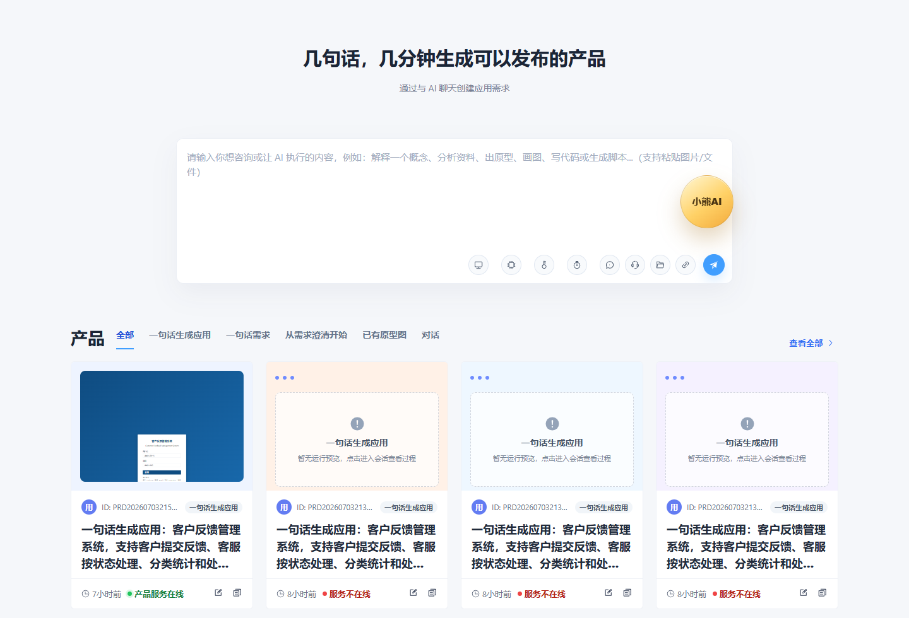
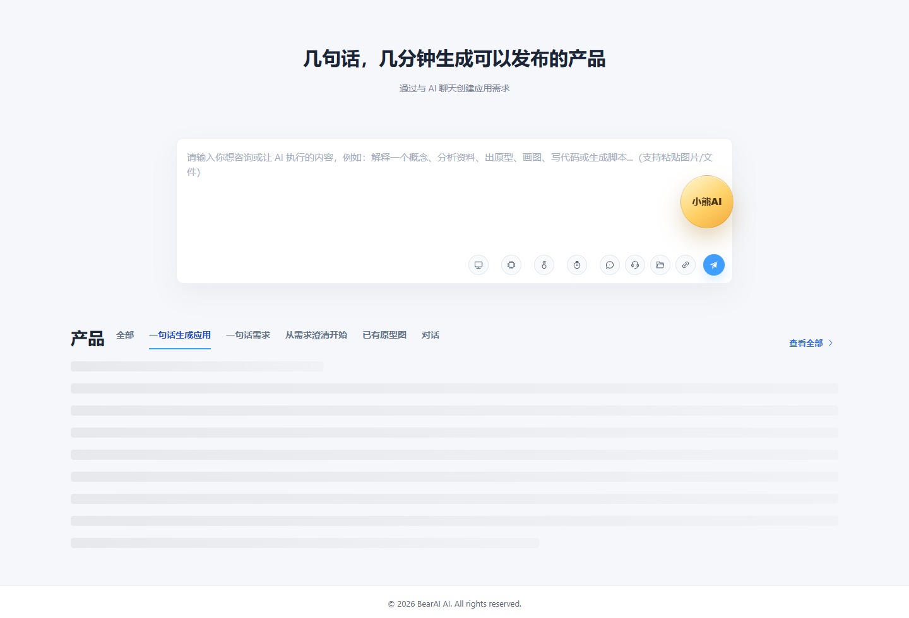
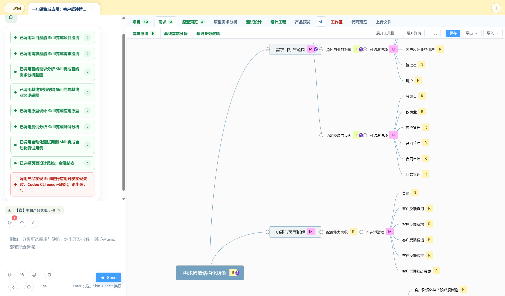
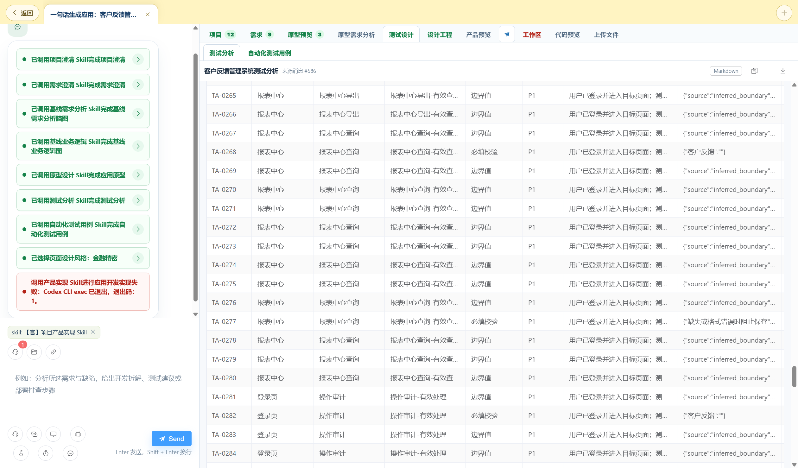
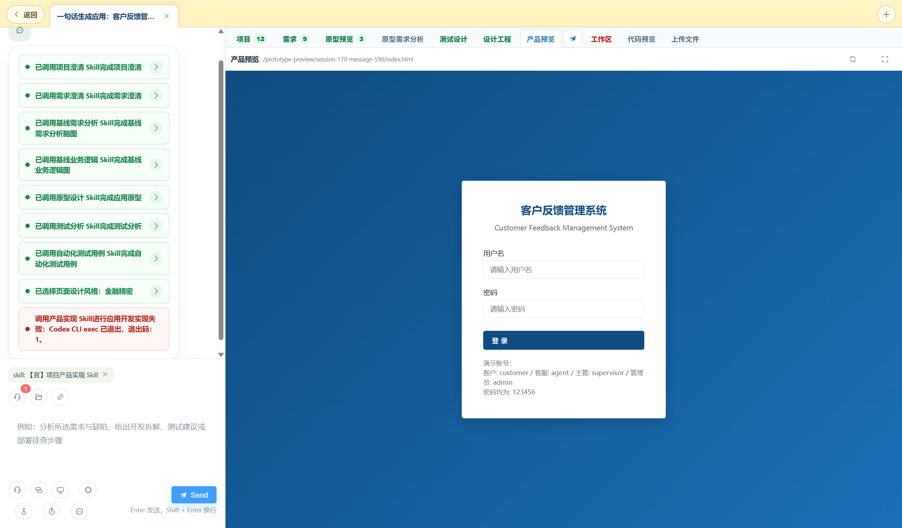
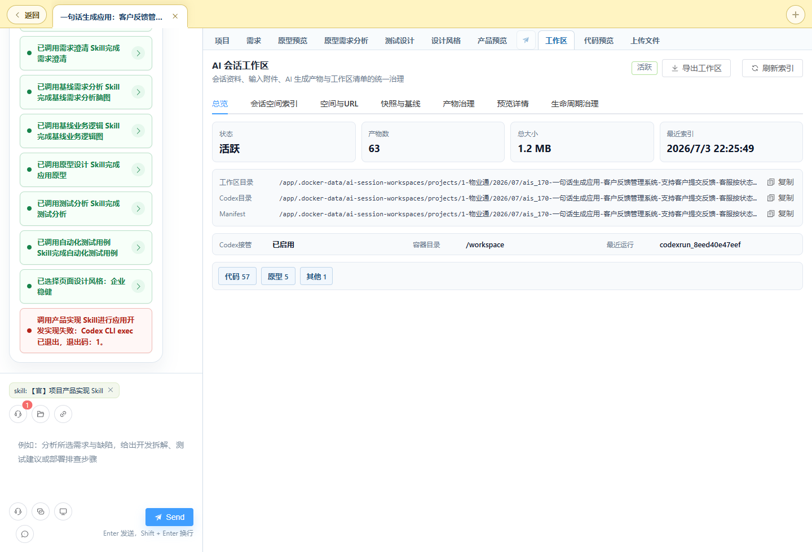

AI 会话开发功能
产品操作手册
本手册面向业务人员、产品经理、需求分析师、测试工程师和研发人员，手把手说明如何在 BearAI 平台的 「AI 产品」入口，从一句话想法出发，经过项目澄清、需求澄清、基线分析、业务逻辑、原型、测试设计、设计风格， 直到生成可预览、可交付的应用。按本手册操作即可独立完成 AI 会话开发的完整流程。 （本手册不包含「思源质量分析」模块。）
01产品是什么
BearAI 的「AI 会话开发」不是一个普通的聊天窗口，而是围绕真实软件研发过程组织的 AI 工作台。 你输入的每一句需求、上传的每一个文件、AI 产出的每一份需求条目 / 业务逻辑图 / 原型 / 测试用例 / 代码， 都会被绑定到同一个「会话」中，可以随时回看、复用和验收。
一句话即可开始
不需要先写完整 PRD。你可以从一句话、一个用户故事、一份已有原型或普通对话开始，平台会帮你逐步补全。
全链路可追溯
平台按「项目澄清 → 需求澄清 → 需求分析 → 业务逻辑 → 原型 → 测试 → 实现」组织流程，每一步产物都能被下一步复用。
可验收可交付
会话详情页保留需求基线、业务逻辑、原型、测试设计、设计风格、代码和运行预览，便于验收、交接和二次迭代。
02核心概念速览
在动手前，先花两分钟认识 6 个贯穿全程的概念，后面的每一步操作都会用到它们。
| 概念 | 它是什么 | 你会在哪里用到 |
|---|---|---|
| 会话 | 一次完整的 AI 研发过程的载体，包含你的输入、AI 的产物和所有配置。每个会话有唯一 ID。 | 在「AI 产品」页发送需求后自动创建；后续所有操作都在这个会话内进行。 |
| 会话类型 | 决定这次会话在什么场景下开启、走多深的自动化流程。共 5 种（见第 04 节）。 | 输入区左下角「会话类型」按钮选择，是决定体验的最关键选项。 |
| 会话环境 | AI 实际运行、生成代码和文件的执行环境。默认使用「本地会话环境」。 | 输入区「会话环境」按钮选择。 |
| 模型 | 驱动会话的大模型或 Codex CLI 引擎，决定生成质量与能力。 | 输入区「模型选择」按钮选择。 |
| 工具箱能力 | 可挂载到会话的专业能力：Prompt / Skill / Agent / Flow / MCP / Tool（见第 14 节）。 | 输入区「工具箱能力」按钮按需勾选。 |
| 产物（基线 / 工作区文件） | AI 产出并沉淀下来的结构化结果，如需求基线、业务逻辑图、原型、测试用例、代码。 | 会话详情页的各个工作区页签中查看与验收。 |
03进入 AI 产品入口
AI 会话开发的统一入口是左侧导航的「AI 产品」页面。进入后你会看到顶部的需求输入区，以及下方已有产品会话的卡片列表。
- 打开「AI 产品」页面 在平台左侧导航进入「AI 产品」。首次进入需确保已登录，页面会自动加载可用的会话环境、模型和历史产品。
- 认识输入区 页面中央是一个大输入框，下方一排圆形按钮就是本次会话的全部配置项（环境、模型、会话类型、工具箱、文件、研发对象）。
- 查看已有产品 输入区下方按「全部 / 一句话生成应用 / 一句话需求 / 从需求澄清开始 / 已有原型图 / 对话」分类展示历史会话卡片，可直接点击进入继续。
04会话类型详解（最关键的一步）
「会话类型」代表不同场景下开启的会话：它决定了你的输入成熟度、平台自动化的深度，以及会话打开后默认进入的工作区。 选对类型能大幅减少后续澄清成本。点击输入区左下角的「会话类型」按钮即可切换，共 5 种。

| 会话类型 | 适合谁 / 什么时候用 | 典型输入 | 平台会做什么 |
|---|---|---|---|
| 对话 | 需要探索、咨询、分析资料、临时调用某个能力的用户。 | 一个问题、一段资料、一个文件、一段代码。 | 保持通用 AI 对话，可手动选择 Prompt / Skill / Agent / MCP / 文件 / 研发对象作为上下文，不强制走研发链路。 |
| 一句话需求 | 只有一个用户故事或业务问题，但需要专业需求分析结果的人。 | 「作为客服主管，我希望看到超时未处理的反馈，以便及时催办。」 | 先把故事拆成角色、目标、业务对象、规则、异常和验收标准，沉淀为需求澄清与基线分析，再继续后续链路。 |
| 一句话生成应用 | 希望快速得到可运行产品的业务负责人、售前、产品经理。 | 「做一个客户反馈管理系统，支持提交反馈、客服处理、分类统计。」 | 自动串联全链路：项目澄清 → 需求澄清 → 基线需求分析 → 基线业务逻辑 → 原型 → 测试分析 → 产品实现，中途无需人工干预。 |
| 从需求澄清开始 | 已有初步需求说明，想跳过从零发散、直接进入确认与基线化的需求人员。 | 需求片段、会议纪要、待确认需求清单。 | 直接进入需求澄清工作区，围绕需求条目打磨、重写、接受 / 不接受，再生成脑图、业务逻辑、原型和测试。 |
| 已有原型图 | 已有 Axure、HTML 原型、截图或页面说明的产品 / 交互人员。 | 原型 ZIP、HTML、截图、页面目录或交互说明。 | 优先从原型解析页面、组件、入口、状态和业务流，再生成原型需求分析、测试分析和业务逻辑。 |
05输入区配置项逐个说明
输入框下方那一排圆形按钮，就是本次会话发送前的全部配置。下面按从左到右的顺序逐个说明，其中前三项（环境、模型、会话类型）通常保持默认即可。
| 按钮 | 作用 | 建议 |
|---|---|---|
| 🖥️ 会话环境 | 选择 AI 运行、生成代码和文件的执行环境。默认「本地会话环境（local-default）」。 | 一般保持默认。处理企业敏感数据时务必使用本地环境。 |
| ⚙️ 模型选择 | 选择驱动会话的模型引擎。列表中包含普通大模型和 Codex CLI 类模型（用于真实生成代码 / 应用）。 | 做「生成应用 / 原型 / 代码」类任务时优先选 Codex CLI 类模型；纯问答可用普通模型。 |
| 🔑 授权类型 | 仅在选中 Codex 模型时出现。可选 API Key / ChatGPT 登录 / Access Token，决定 Codex 用哪种凭据。 | 按平台管理员配置的凭据方式选择，默认 API Key。 |
| ⏱️ 速度 | 仅在选中 Codex 模型时出现。可选 快速 / 均衡 / 深入 / 最强，越往后思考越充分、耗时越长、质量越高。 | 探索性任务用「均衡」，重要交付用「深入 / 最强」。 |
| 💬 会话类型 | 本次会话的场景类型，共 5 种（见第 04 节）。最重要的选项。 | 务必按你的输入成熟度正确选择。 |
| 🧰 工具箱能力 | 按 Prompt / Skill / Agent / Flow / MCP / Tool 分组勾选本轮要启用的专业能力，右上角数字为已选数量。 | 按需选择，避免一次挂载过多导致上下文过载（见第 14 节）。 |
| 📁 选择文件 | 附带本地文件作为上下文。支持 PDF / Word / TXT / MD / HTML / 图片 / ZIP / Excel / PPT 等，单次最多 6 个。 | 需求文档、原型 ZIP、参考资料都可上传，平台会自动提取文本。 |
| 🔗 选择 AI 研发对象 | 把已有会话的工作区产物（项目基线、需求、原型、测试、代码等）作为本轮上下文引用。 | 做二次迭代或跨会话复用时非常有用（见第 15 节）。 |
| ➤ 生成 / 发送 | 创建会话并进入会话详情页开始执行。需已填写内容、选好环境和模型才可点击。 | 也可在输入框中按 Enter 直接发送。 |
06五分钟快速上手
以「一句话生成应用」为例，走一遍从想法到可预览应用的最短路径。其它会话类型步骤类似，只是自动化深度不同。
- 进入「AI 产品」并输入需求 在输入框中描述要生成的软件，例如：「做一个客户反馈管理系统，支持提交反馈、客服处理、分类统计」。需求越具体（业务对象、角色、动作、统计目标），后续澄清越少。
- 选择会话类型为「一句话生成应用」 点击「会话类型」按钮选中它。此类型会自动串联整条研发链路。
- 确认环境与模型 会话环境保持「本地会话环境」；模型建议选择 Codex CLI 类模型，并按需设置授权类型与速度。
- 点击「生成」发送 平台会创建会话并自动跳转到会话详情页（CodexChat 工作区），开始逐阶段执行。
- 观察左侧研发链路执行 会话详情页左侧会依次显示项目澄清、需求澄清、基线分析、业务逻辑、原型、测试、产品实现各阶段的执行状态（进行中 / 完成 / 失败）。
- 按产物验收 切到右侧各工作区页签，先确认需求澄清和业务逻辑是否符合真实业务，再看原型、测试设计、设计风格，最后在「产品预览」查看可运行结果。

07研发链路与执行状态
无论哪种研发型会话类型，平台背后都遵循同一条研发链路。理解这条链路，你就知道每一步在做什么、产出什么、以及从哪里验收。
不同会话类型走多长的链路
| 会话类型 | 覆盖阶段 | 是否自动 |
|---|---|---|
| 一句话生成应用 | 阶段 1 → 7（全链路） | 全自动 |
| 一句话需求 | 阶段 1 → 7，但强调先澄清后生成 | 半自动 |
| 从需求澄清开始 | 阶段 2 → 7（跳过项目从零发散） | 半自动 |
| 已有原型图 | 从原型解析 → 基线分析 → 业务逻辑 → 测试 → 实现 | 半自动 |
| 对话 | 不强制链路，按需调用能力 | 手动 |
如何读懂执行状态
会话详情页左侧会为每个阶段显示一张执行卡片，通过颜色和标记表示进度：
已完成 进行中 失败 等待中
08会话详情工作区（10 个页签）
点击「生成」或点开任意历史产品卡片后，进入的就是会话详情工作区（CodexChat 页面）。 左侧是对话与研发链路执行区，右侧是按对象组织的工作区页签。下面这 10 个一级页签，也是「选择 AI 研发对象」弹框里的对象来源。

| 一级页签 | 二级子对象 | 用途 |
|---|---|---|
| 项目 | 项目澄清、项目基线 | 确认项目范围、角色、业务对象、约束和后续研发输入，并沉淀为项目基线。 |
| 需求 | 需求澄清、基线需求分析、基线业务逻辑 | 把需求从口语描述推进到结构化基线、脑图和可编辑业务逻辑图。 |
| 原型预览 | AI 原型、Axure 原型 | 查看 AI 生成的原型或导入的 Axure 原型，作为需求、测试和开发的依据。 |
| 原型需求分析 | 原型需求分析、原型业务逻辑 | 从已有原型解析出页面、组件、交互和业务流程。 |
| 测试设计 | 测试分析、自动化测试用例 | 生成等价类、边界值、状态转换、权限、异常、数据一致性等测试设计。 |
| 设计风格 | 页面设计风格 | 选择视觉风格、Design Token、页面模板和视觉验收要求。 |
| 产品预览 | 产品预览 | 查看可访问的生成应用或预览服务地址。 |
| 工作区 | 工作区文件、工作区快照 | 查看会话生成的文件、代码资产、快照与恢复点等治理对象。 |
| 代码预览 | 代码预览 | 查看会话生成的源代码文件内容。 |
| 上传文件 | 上传文件 | 查看你在本会话中上传的原始文件。 |
09需求澄清操作（核心体验）
需求澄清是本平台最核心的体验之一。它不是让 AI 写一段需求说明，而是把需求拆成一条条可选择、可编辑、可追踪、可验收的结构化条目， 由你逐条确认后沉淀为稳定的需求基线，供后续所有环节复用。

单条需求上的操作
🔧 打磨
让 AI 在当前条目基础上做更细的拆解，产出更细的子需求或补充验收点。适合把粗需求变精。
♻️ 重写
用 AI 重新生成替换当前条目。适合当前条目方向不对、需要整体改写时使用。
✅ 接受需求
确认该需求。接受后它会成为后续基线分析、业务逻辑、原型、测试和实现的稳定输入。
🚫 不接受需求
排除该需求。保存基线时会被剔除，避免无依据的功能进入实现。
批量操作
勾选多条需求后，可以进行批量打磨 / 批量重写 / 批量接受，适合把用户故事、会议纪要、业务描述一次性整理成可进入研发链路的需求基线。
从「只有一个用户故事」开始的推荐流程
- 选择「一句话需求」会话类型输入用户故事，如「作为客服主管，我希望查看超时未处理反馈，以便及时催办」。
- 让 AI 拆解故事平台会识别角色、业务目标、触发条件、业务对象、页面功能、规则、异常和验收标准。
- 在需求澄清中逐条确认对拆出的条目逐项打磨、重写、接受或不接受，把口语化故事变成专业需求。
- 生成基线分析和测试种子接受后的需求进入基线需求分析，用于生成页面功能、原子功能、追踪矩阵和测试点。
10基线需求分析与业务逻辑
需求被接受后，平台会把它转化成两类结构化产物：基线需求分析（页面 / 功能 / 测试种子的结构化拆解） 和基线业务逻辑（业务流程与状态图）。它们是原型、测试和代码实现的直接输入。
基线需求分析
把接受的需求转成后续可消费的结构化输入，通常包含：
- 页面节点：系统包含哪些页面。
- 功能节点 / 原子功能：每个页面下的功能，以及不可再拆的最小功能单元。
- 原子测试种子：从原子功能派生的最小测试关注点。
- 追踪矩阵：需求 → 功能 → 测试的对应关系，保证不漏不错。

基线业务逻辑
生成当前系统真实业务的流程图，通常包含业务流程、状态流转、数据流、权限矩阵与异常补偿。

11原型与测试设计
在写代码之前，平台会先产出可预览的原型和测试设计，让你在实现前就能检查页面结构和质量覆盖，把问题拦在最前面。
原型预览
在「原型预览」页签查看 AI 生成的 HTML 原型（或导入的 Axure 原型）。用它检查：页面是否齐全、字段是否完整、操作入口是否清晰、状态和提示是否能支撑核心业务流。

测试设计
在「测试设计」页签查看两类产物：
- 测试分析：从等价类、边界值、状态转换、权限、异常、数据一致性等维度生成的测试分析矩阵与原子测试点。
- 自动化测试用例：可用于自动化执行（如 Playwright）的测试用例草案。

12设计风格：把视觉约束带入开发
「设计风格」页签位于「产品预览」之前，用于在写代码之前确定页面视觉风格。开发时 AI 会读取所选风格档案， 把 Design Token、页面模板和视觉验收要求写入实现要求中，保证生成的界面统一、专业。

内置风格档案
企业稳健
研发平台 / 质量平台 / 管理后台。低噪声、表格可扫描、操作路径明确，是默认风格。
工程深色
面向开发工具、控制台类深色界面。
金融精密
面向数据运营、金融类高信息密度界面。
清爽协作
面向协作、效率类轻量清爽界面。
AI 实验室
面向 AI 产品、前沿科技感界面。
Design Token 与页面模板
每个风格档案都带一组 Design Token（主色、辅助色、强调色、界面底色、圆角、密度、字体等）， 以及可覆盖的页面模板（登录页、工作台、列表页、详情 / 表单页、数据看板、移动端等） 和质量门禁（设计 Token 一致、桌面 / 移动端自适应、Playwright 截图验收、文字不溢出不重叠等）。
操作步骤
- 选择风格按软件类型选：管理后台优先「企业稳健」，数据运营选「金融精密」，开发工具选「工程深色」。
- 查看 / 微调 Token 与模板在页签中预览页面效果、核对色彩与密度，按需调整。
- 保存设计档案保存后在当前会话及后续开发环节复用，形成可追踪的项目设计基线。开发 Agent 会据此生成界面。
13产品预览与代码
研发链路走到最后，平台会生成真实代码并尝试启动预览服务。你可以在这两个页签查看最终成果。

产品预览页签
显示生成应用的运行预览。卡片和页签会标注「产品服务在线 / 服务不在线 / 检测中」。在线时可点击进入或复制预览地址分享。
代码预览页签
查看会话生成的源代码文件内容。当产品实现失败时，可结合代码预览与工作区文件定位构建、启动或运行错误。
14工具箱能力（Prompt / Skill / Agent / Flow / MCP / Tool）
AI 会话可以从工具箱按需挂载不同类型的专业能力。能力不是越多越好，建议按当前任务选择必要能力，避免上下文过载。 点击输入区「工具箱能力」按钮，能力会按下面 6 种类型分组展示。
Prompt（提示词）
固定格式的分析、总结、审查、生成任务。例如「需求分析 Prompt」「用例生成 Prompt」。
Skill（技能）
带规则、步骤和输出合约的专业能力。例如「缺陷分析 Skill」、各阶段官方研发 Skill。
Agent（智能体）
需要决策、检查、串联多步动作的能力。例如「Playwright 测试 Agent」、源头门禁 Agent。
Flow（流程）
固定流程编排。例如「AI 研发闭环 Flow」（需求→用例→开发→测试→缺陷→回归→提交）、「AI 自动部署 Flow」。
MCP（上下文接入）
让 AI 安全读取外部或平台上下文。例如「平台上下文 MCP」，只读接入需求、任务、缺陷、部署等上下文。
Tool（工具动作）
执行具体动作。例如「平台查询 Tool」「AI 需求创建 Tool」「AI 开发任务执行 Tool」「AI 部署执行 Tool」等。
能力上的两个标记：风险等级与仅随本轮
| 标记 | 含义 |
|---|---|
| low / medium / high 风险等级 | 标识能力的操作风险。high 风险（如直接执行、部署类）请谨慎启用，确认操作影响后再使用。 |
| 仅随本轮提示 | 该能力尚未通过审核（未 approved）或不可长期绑定，只会作为本轮提示的一部分临时生效，不会持久绑定到会话。 |
15附带文件与引用 AI 研发对象
除了文字需求，你还能给会话补充两类上下文：本地上传的文件，以及已有会话沉淀的研发产物。
选择文件（📁）
- 支持 PDF、Word、TXT、Markdown、HTML、图片（PNG/JPG）、ZIP/TAR/RAR、Excel、PPT 等格式。
- 单次最多附带 6 个文件；平台会自动为需求文档提取文本作为上下文。
- 原型类文件（HTML、ZIP 等）会被自动标记为「原型」，其它标记为「其它」。
选择 AI 研发对象（🔗）
点击后打开「选择本轮上下文」弹框，按项目 / 需求 / 原型预览 / 原型需求分析 / 测试设计 / 设计风格 / 产品预览 / 工作区 / 代码预览 / 上传文件分类， 引用其它会话已经生成的产物（如某个需求基线、某张业务逻辑图、某份测试用例、某段代码）作为本轮上下文。

16结果验收清单
企业级 AI 开发不能只看「有没有生成页面」。建议按下面 6 层逐层验收，任何一层不通过都回到对应环节修正后再往下走。
| 验收层 | 检查什么 | 不通过时怎么处理 |
|---|---|---|
| 需求层 | 需求是否都来自当前会话输入？有无凭空新增？是否覆盖角色、对象、规则、异常和验收标准？ | 回到需求澄清，重写或不接受错误需求，再重新生成后续产物。 |
| 业务逻辑层 | 流程图是否描述当前系统真实业务？是否包含状态流转、权限、异常和补偿？ | 重新生成基线业务逻辑，并要求读取当前项目 / 需求基线。 |
| 原型层 | 页面、字段、操作、状态和提示是否能支撑核心业务流？ | 回到原型或需求澄清补充页面与交互，再更新测试设计。 |
| 测试层 | 是否覆盖等价类、边界值、状态转换、权限、异常和数据一致性？ | 在测试分析中继续细化原子测试点，避免一个测试点验证多个条件。 |
| 风格层 | 界面是否符合所选设计风格、Design Token、页面密度和视觉验收要求？ | 回到设计风格页签重新选择或保存档案，再让开发环节修正。 |
| 运行层 | 产品预览是否可访问？容器、数据库、接口和持久化是否正常？ | 查看产品实现日志、代码预览和工作区文件，定位构建、启动或运行错误。 |
17常见问题与处理
提示"加载工具箱能力失败"
通常是能力资产或会话环境接口临时加载失败。先确认登录态有效，点击「重试」；若只影响能力列表，可继续查看和使用已生成的产物。
提示"加载会话环境失败"
会话环境加载失败会影响环境、模型和上下文选择。重新进入「AI 产品」页或会话详情页，确认当前会话环境仍存在后点击「重试」。
突然跳到登录页
多数与本地登录凭据被清空或刷新失败有关。重新登录后再打开多个页签验证；同一浏览器应共用一套登录态。
业务逻辑图 / 需求内容不对
检查产物中的业务对象和页面是否来自当前会话。若混入历史系统内容，回到对应环节重新生成，并要求读取当前会话的项目 / 需求基线。
产品实现失败 / 预览打不开
查看左侧链路失败卡片、AI 消息、代码预览和工作区文件。失败不影响前序需求、业务逻辑、原型和测试产物继续复用，修正后重试即可。
不知道从哪种会话类型开始
只想咨询选「对话」；只有一句故事选「一句话需求」；想最快产出系统选「一句话生成应用」；已有需求文字选「从需求澄清开始」；已有原型选「已有原型图」。
「生成」按钮点不了
需同时满足：输入框有内容、已选会话环境、已选模型。三者齐全后按钮才会亮起，也可在输入框内按 Enter 发送。
能力太多，该选哪些
研发型会话类型已自动带上该场景所需的官方能力，通常无需手动加。只有做特定动作（如查询平台、创建需求、执行部署）时，才按需补选对应 Tool / Agent。
18术语表
| 术语 | 解释 |
|---|---|
| 会话（Session） | 一次完整 AI 研发过程的载体，含输入、配置和所有产物，有唯一 ID。 |
| 会话类型 | 本次会话开启的场景：对话 / 一句话需求 / 一句话生成应用 / 从需求澄清开始 / 已有原型图。 |
| 研发链路 | 项目澄清 → 需求澄清 → 基线需求分析 → 基线业务逻辑 → 原型设计 → 测试分析 → 产品实现 的推进流程。 |
| 基线（Baseline） | 被确认、可稳定复用的产物版本，如项目基线、需求基线。 |
| 需求澄清 | 把模糊需求拆成可打磨 / 重写 / 接受 / 不接受的结构化条目的过程。 |
| 原子功能 / 原子测试点 | 不可再拆分的最小功能单元 / 最小测试关注点。 |
| Design Token | 设计变量集合（主色、圆角、密度、字体等），保证界面视觉一致。 |
| Codex CLI | 用于真实生成代码 / 应用的执行引擎，配套「授权类型」与「速度」两个选项。 |
| 工具箱能力 | 可挂载到会话的专业能力，分 Prompt / Skill / Agent / Flow / MCP / Tool 六类。 |
| 工作区快照 | 会话工作区在某一时刻的存档，可作为恢复点或治理对象。 |